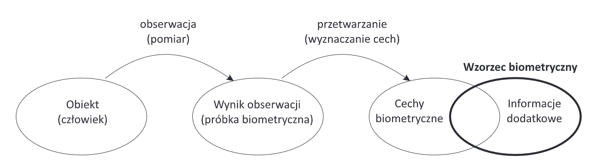
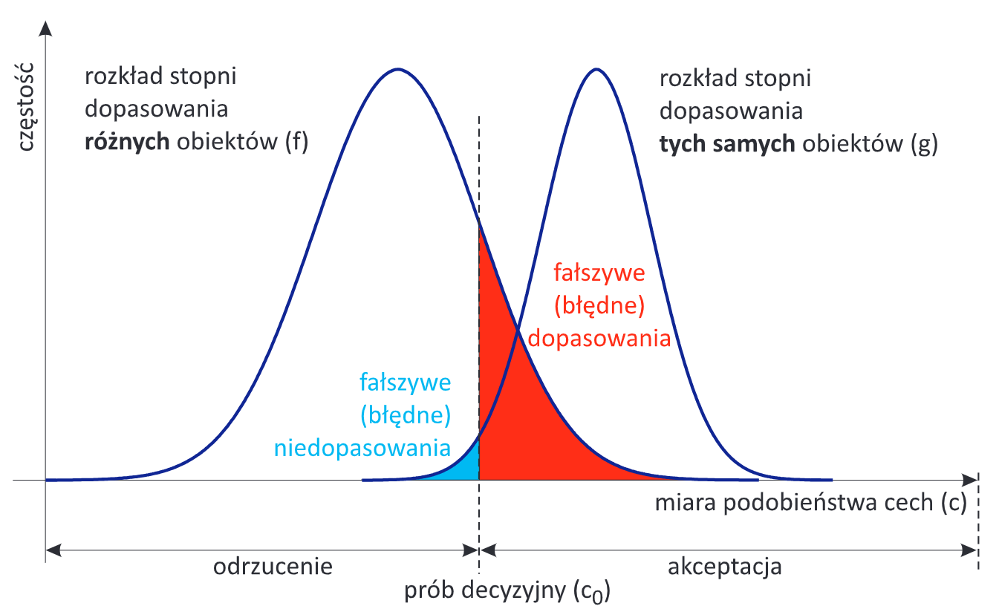
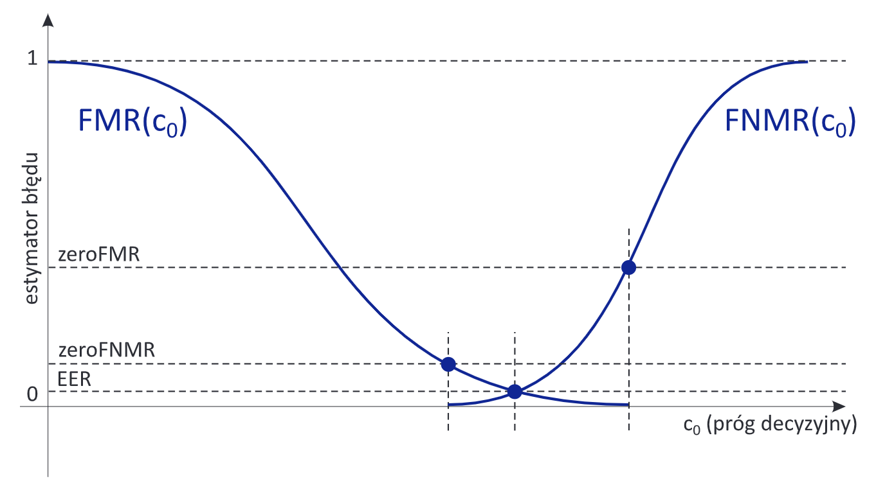

Biometryczna identyfikacja tożsamości
Wstęp
Znaczenie pojęcia
- Bios - życie, metros - pomiar
- niesprecyzowany cel - np. diagnostyka medyczna, ekologia
- Biometria jako dział informatyki
- pomiar własności anatomicznych lub własności zachowania
człowieka
- określony cel - automatyczne rozpoznanie tożsamości
- Definicja - zastosowanie własności anatomicznych lub własności
zachowania człowieka do automatycznego rozpoznania tożsamości
- automatyczne - bez udziału eksperta
- może częściowo wykorzystywać doświadczenie ekspertów (np.
daktyloskopii)
- możliwość braku nadzoru, konieczna duża szybkość, powtarzalność
działania
- Własności anatomiczne lub zachowania
- w odróżnieniu od innych składników uwierzytelniania (coś co mam, coś
co wiem)
- Dotyczy człowieka (żywej osoby)
- odporność na fałszerstwo - np. pokazanie zdjęcia itp
- testowanie żywotności, autentyczności - niezbędne do nazywania
systemu biometrycznym
Rozpoznanie biometryczne
- Pozytywne
- weryfikacja hipotezy że próbka pochodzi od osoby znanej systemowi
(zarejestrowanej)
- Negatywne
- weryfikacja hipotezy że próbka pochodzi od osoby nieznanej systemowi
(niezarejestrowanej)
Schematy uwierzytelniania
- Klasyczne
- ustalenie tożsamości (identyfikacja) - porównanie 1:n
- potwierdzenie tożsamości (weryfikacja) - porównanie 1:1
- Nowe (wynikające z biometrii)
- negatywne uwierzytelnienie
- identyfikacja - nie należę do grupy X
- weryfikacja - nie jestem osobnikiem X
- eliminacja “wielokrotnych tożsamości”
Pojęcia

Pojęcia
- Obiekt - człowiek
- Obserwacja - pomiar
- Charakterystyka lub właściwość biometryczna
- dziedzina obserwacji
- wygląd twarzy, kształt dłoni itp.
- Modalność biometryczna
- kombinacja charakterystyki i sposobu pomiaru i przetwarzania
- np. wygląd twarzy 3D, cechy termiczne dłoni w IR
- Próbka biometryczna - wynik obserwacji (pomiaru)
- surowe lub wstępnie przetworzone dane pomiarowe
- np. obraz twarzy 3D, obraz dłoni 2D
- Cecha biometryczna
- reprezentacja (zwykle skrócona) próbki biometrycznej
- np. odległości między punktami charakterystycznymi twarzy
- wyizolowanie trwałych i wyjątkowych elementów z obrazu - te które
niosą dużo informacji
- nieodwracalne przekształcenie - zaleta bezpieczeństwa, mniej boli
jak wycieknie wektor cech niż obraz twarzy
- Wzorzec biometryczny
- dane referencyjne, które zachowujemy w bazie danych na potrzeby
rozpoznawania biometrycznego
- częściowo zazębia się z cechą biometryczną +metadane
Historia
automatycznych systemów biometrycznych
- Lata 60-te
- automatyczna identyfikacji na podstawie odcisku palca i
rozpoznawania głosu
- Lata 70-te
- Lata 80-te
- obraz siatkówki i podpis odręczny
- Lata 90-te
- XXI wiek
- zastosowanie na masową skalę
- biometryczne urządzenia przenośne
- brak wymagania kooperacji z użytkownikiem
Podział modalności
Anatomiczne
- Raczej statyczny pomiar, chwilowa obserwacja
- Raczej nie uwzględnia zależności czasowych
- Stosowane w praktyce
- palec - odcisk, układ żył
- dłoń - geometria 2D/3D, termika, układ żył, odcisk
- twarz - geometria 2D/3D, termika
- oko - tęczówka, układ żył w naczyniówce lub białkówce
(siatkówka)
- Możliwe do wykorzystania
- DNA
- zapach
- ucho - geometria, termika
- palec - termika, geometria, struktura kanałów pod paznokciem
Behawioralne
- Obserwacja akcji
- Obserwacja w czasie, dynamiczny pomiar
- Kluczowe są zależności czasowe
- Stosowane w praktyce
- podpis odręczny
- głos - rozpoznawanie mówiącego (nie rozpoznawanie
mowy)
- rytm uderzania w klawisze
- Możliwe do wykorzystania
- fale EEG
- pismo odręczne
- oko - dynamika gałki ocznej, dynamika źrenicy
- sposób chodzenia
- ruch warg
- palec - rezonans opuszków
- skojarzenia
Pożądane własności biometrii
Unikalność
- Wysoka zawartość informacyjna
- Niezależne od genotypu, penetracji genetycznej
- bliźniąt jednojajowych jest zaskakująco dużo!
- Hipoteza o unikalności cech jest uzasadniona tylko eksperymentalnie
- nie ma matematycznego dowodu że bliźnięta jednojajowe będą miały
różne tęczówki
- Tęczówka jest uważana za najmniej zależną od genotypu, twarz
bardziej
- DNA oczywiście nie spełnia kryterium
Niezmienność w czasie
- Odporność na zmiany powodowane chorobami
- Problem starzenia się wzorców
- spadająca jakość dopasowania pomiędzy próbkami, których pobranie
jest oddalone w czasie (norma ISO)
- aktualne badania dają sprzeczne wnioski
- badania muszą być rozciągnięte na wiele lat
- sprzęt się zmienia w ciągu dekady
- Dowód osobisty i paszport jest ważny przez 10 lat
Akceptacja użytkowników
- W celu zwiększenia wiarygodności, dla wygody użytkownika
- Brak wymogu współpracy - możliwe nadużycia
- Obawy społeczne, kulturowe, o prywatność
- Obawy zdrowotne (czy kamera nie uszkodzi wzroku)
- Ochrona danych osobowych
- Dane biometryczne wg. RODO są szczególnie wrażliwe
- Minimalna iwazyjność
- Nieufność do decyzji systemów opartych o UM
- Np. DNA - słabe pod tym kątem
Odporność na fałszerstwa
- Zmiana własności naszego ciała niemożliwa lub ryzykowna
- Możliwość konstrukcji efektywnych testów autentyczności
Możliwość realizacji
technicznej
- Łatwość obserwacji i pomiaru
- Powtarzalność obserwacji i pomiaru
- Powszechność własności biometrycznych
- Niski koszt budowy urządzeń
Tryby pracy
Rejestracja
- Enrollment
- Wygenerowanie i zapamiętanie wzorca biometrycznego
- np. wizyta w urzędzie w celu wyrobienia paszportu
- Trwa dłużej i jest bardziej skomplikowana
- Nadzorowana przez człowieka
- albo interfejs z instrukcjami
- Wielokrotny pomiar
- zaostrzona kontrola jakości próbek w celu uzyskania
reprezentatywnych danych
- robi się raz na dłuższy czas, trzeba zadbać o jakość
- Przetwarzanie surowych danych i utworzenie wzorca
- kontrola spójności cech biometrycznych
- Powiązanie danych biometrycznych z pozostałymi danymi osobowymi
- Zapis wzorców biometrycznych w bazie danych lub na indywidualnym
nośniku danych
Uwierzytelnienie
- Wykorzystanie zachowanego wzorca i aktualnie wyznaczonych cech do
potwierdzenia lub ustalenia tożsamości
- Bez nadzoru człowieka
- Odczytanie wzorca biometrycznego z bazy danych (innego nośnika)
- Najczęściej jednokrotny pomiar
- ma być szybciej
- test żywotności / autentyczności
- kontrola jakości
- Przetwarzanie surowych danych, wyznaczenie cech
- Wyznaczenie dopasowania
- Decyzja
- porównaniu wyniku dopasowania z progiem zgodności
Decyzje systemu
biometrycznego
- Błędy metod biometrycznych
- błędne niedopasowanie (false non-match)
- błędne dopasowanie (false match)
- Stopień dopasowania / podobieństwa
- miara podobieństwa weryfikowanej próbki ze wzorcem
- Decyzja
- dopasowanie (match) lub niedopasowanie
(non-match)
- na podstawie progu decyzyjnego
- próg ustalony dla danego urządzenia / systemu
Aproksymacja
prawdopodobieństw błędów

Wykres gęstości
prawdopodobieństwa
Stopień fałszywych
niedopasowań
- False non-match rate (FNMR)
- Niebieskie na obrazku
- Jeśli znamy \(g\) - \(g_{FNM}(c_0) = \int^{c_0}_{-\infty}
g(c)dc\)
- Jeśli nie znamy \(\hat{g}_{FNM}(c_0) =
FNMR(c_0)\) - stosunek
- liczba fałszywych niedopasowań dla \(c_0\) / liczba wszystkich porównań w
próbie
Stopień fałszywych dopasowań
- False match rate (FMR)
- Czerwone na obrazku
- Jeśli znamy \(f\) - \(f_{FM}(c_0) = \int^{\infty}_{c_0}
f(c)dc\)
- Jeśli nie znamy - \(\hat{f}_{FM}(c_0) =
FMR(c_0)\) - stosunek
- liczba fałszywych dopasowań dla \(c_0\) / liczba wszystkich porównań w
próbie
Podstawowe wskaźniki oceny

Krzywe błędów
- \(FTA\) - stopień nieudanych
pomiarów (Failure To Acquire)
- \(FTE\) - stopień odrzuconych
rejestracji (Failure To Enroll)
- \(FMR\)/\(FNMR\) - dla danego punktu pracy (progu
decyzyjnego)
- \(EER\) - błąd zrównoważony
(Equal Error Rate)
- \(ZeroFNMR\) - najmniejszy \(FMR\), dla którego \(FNMR=0\)
- \(ZeroFMR\) - najmniejszy \(FNMR\) dla którego \(FMR=0\)